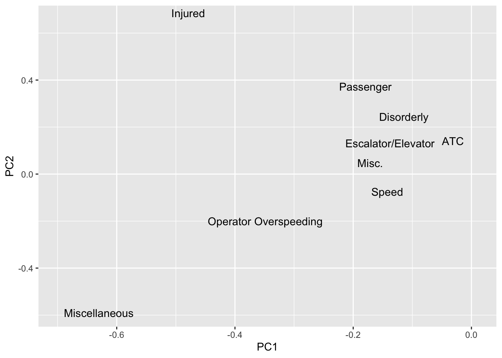
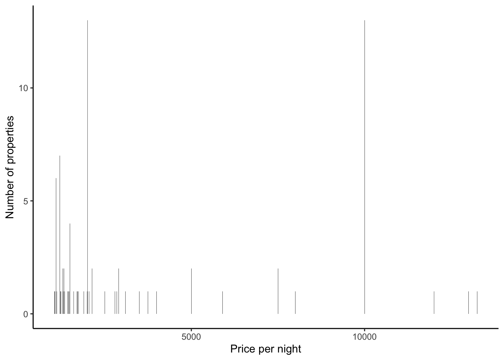
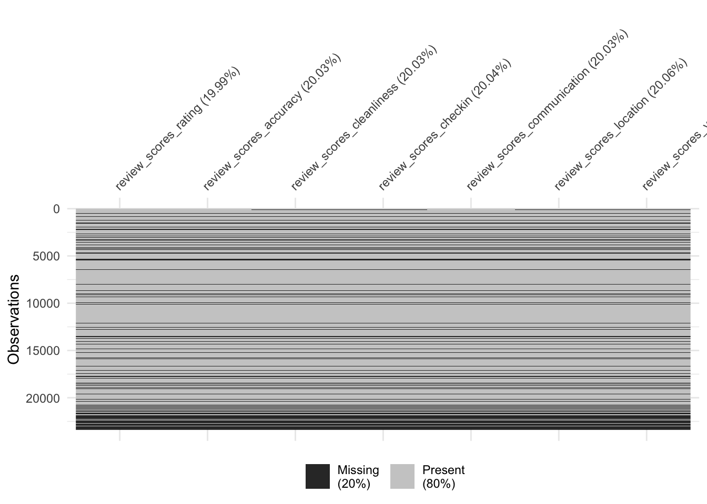
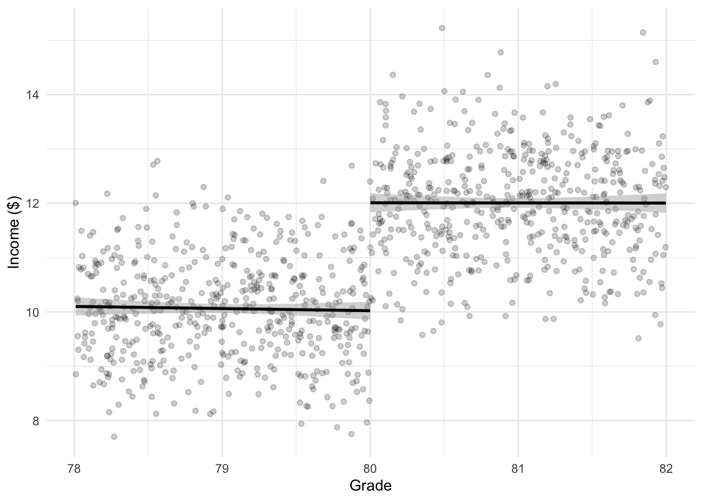

Chapter 13 Exploratory data analysis
The skim function from the skimr package is just a quick way of looking at the data. It can be handy when you get a new dataset to quickly come to terms with it. The p0, p25, p50, etc, values that it provides are percentiles. So for instance, P50 is the 50th percentile which means that 50 per cent of the data are below this, and 50 per cent are above i.e. the median. P0 should be the minimum, and p100 should be the maximum. The middle ones are similarly defined, so p25, means that 25 per cent of the data are below this point and 75 per cent of it is above this point. The general idea of both the percentiles and the histogram is to give you a quick idea of how skewed your data is.
This chapter was written with Monica Alexander.
Required reading
- Wickham, Hadley, and Garrett Grolemund, 2017, ‘R for Data Science’, Chapters 3 and 7, freely available here: https://r4ds.had.co.nz/.
Recommended reading
- Hall, Megan, 2019, ‘Exploratory Data Analysis Using Tidyverse’, freely available at: https://hockey-graphs.com/2019/10/08/exploratory-data-analysis-using-tidyverse/.
- Jordan, Michael I, 2019, ‘AI - The revolution hasn’t started yet’, freely available at: https://hdsr.mitpress.mit.edu/pub/wot7mkc1.
- Silge, Julia, 2018, ‘Understanding PCA using Stack Overflow data’, freely available at: https://juliasilge.com/blog/stack-overflow-pca/.
- Soetewey, Antoine, 2020, ‘Descriptive statistics in R’, freely available at: https://www.statsandr.com/blog/descriptive-statistics-in-r/.
- Stodulka, Jiri, 2019, ‘Toronto Crime and Folium’, freely available at: https://www.jiristodulka.com/post/toronto-crime/.
- Wong, Julia Carrie, 2020, ‘One year inside Trump’s monumental Facebook campaign’, The Guardian, 29 January, freely available at: https://www.theguardian.com/us-news/2020/jan/28/donald-trump-facebook-ad-campaign-2020-election.
Key concepts/skills/etc
- Quickly coming to terms with a new dataset
Key libraries/functions/etc
tidyverseggplot2
Pre-quiz
- In your own words what is exploratory data analysis?
- If you have a dataset called ‘my_data’, which has two columns: ‘first_col’ and ‘second_col’, then could you please write some rough R code that would generate a graph (the type of graph doesn’t matter).
- Consider a dataset that has 500 rows and 3 columns, so there are 1,500 cells. If 100 of the cells are missing data for at least one of the columns, then would you remove the whole row your dataset or try to run your analysis on the data as is, or some other procedure? What if your dataset had 10,000 rows instead, but the same number of missing cells?
- Please note three ways of identifying unusual values.
- What is the difference between a categorical and continuous variable?
13.1 Introduction
Exploratory data analysis is never finished, you just die.
This chapter is about exploratory data analysis (EDA) and data visualization steps in R. The aim is to get you used to working with real data (that has issues) to understand the main characteristics and potential issues.
We will be using the opendatatoronto R package, which interfaces with the City of Toronto Open Data Portal.
13.2 A note on packages
If you are running this Rmd on your local machine, you may need to install various packages used (using the install.packages function).
Load in all the packages we need:
13.3 TTC subway delays
This package provides an interface to all data available on the Open Data Portal provided by the City of Toronto.
Use the list_packages function to look at what’s available
## # A tibble: 405 x 11
## title id topics civic_issues publisher excerpt dataset_category
## <chr> <chr> <chr> <chr> <chr> <chr> <chr>
## 1 Cata… 473d… City … <NA> Informat… "Histo… Table
## 2 Toro… 1d07… City … Mobility Informat… "Linea… Map
## 3 Prop… 1aca… Locat… Mobility Informat… "This … Document
## 4 Addr… abed… Locat… Mobility Informat… "This … Document
## 5 Lobb… 6a87… City … <NA> Lobbyist… "The L… Document
## 6 Muni… 5da2… City … Affordable … Municipa… "This … Document
## 7 Buil… 108c… Devel… Affordable … Toronto … "Provi… Document
## 8 Buil… 8219… Devel… <NA> Toronto … "Provi… Document
## 9 Auto… 6b4b… Healt… <NA> Toronto … "Locat… Document
## 10 Earl… 2619… Commu… Poverty red… Children… "Early… Map
## # … with 395 more rows, and 4 more variables: num_resources <int>,
## # formats <chr>, refresh_rate <chr>, last_refreshed <date>Let’s download the data on TTC subway delays in 2019. There are multiple files for 2019 so we need to get them all and make them into one big dataframe.
res <- list_package_resources("996cfe8d-fb35-40ce-b569-698d51fc683b")
res <- res %>% mutate(year = str_extract(name, "201.?"))
delay_2019_ids <- res %>% filter(year==2019) %>% select(id) %>% pull()
delay_2019 <- c()
for(i in 1:length(delay_2019_ids)) {
delay_2019 <- bind_rows(delay_2019, get_resource(delay_2019_ids[i]))
}
# make the column names nicer to work with
delay_2019 <- clean_names(delay_2019)Let’s also download the delay code and readme, as reference.
delay_codes <- get_resource("fece136b-224a-412a-b191-8d31eb00491e")
delay_data_codebook <- get_resource("54247e39-5a7d-40db-a137-82b2a9ab0708")This dataset has a bunch of interesting variables. You can refer to the readme for descriptions. Our outcome of interest is min_delay, which give the delay in mins.
## # A tibble: 6 x 10
## date time day station code min_delay min_gap bound line
## <dttm> <chr> <chr> <chr> <chr> <dbl> <dbl> <chr> <chr>
## 1 2019-01-01 00:00:00 01:08 Tues… YORK M… PUSI 0 0 S YU
## 2 2019-01-01 00:00:00 02:14 Tues… ST AND… PUMST 0 0 <NA> YU
## 3 2019-01-01 00:00:00 02:16 Tues… JANE S… TUSC 0 0 W BD
## 4 2019-01-01 00:00:00 02:27 Tues… BLOOR … SUO 0 0 N YU
## 5 2019-01-01 00:00:00 03:03 Tues… DUPONT… MUATC 11 16 N YU
## 6 2019-01-01 00:00:00 03:08 Tues… EGLINT… EUATC 11 16 S YU
## # … with 1 more variable: vehicle <dbl>13.4 EDA and data viz
The following section highlights some tools that might be useful for you when you are getting used to a new dataset. There’s no one way of exploration, but it’s important to always keep in mind:
- what should your variables look like (type, values, distribution, etc)
- what would be surprising (outliers etc)
- what is your end goal (here, it might be understanding factors associated with delays, e.g. stations, time of year, time of day, etc)
In any data analysis project, if it turns out you have data issues, surprising values, missing data etc, it’s important you document anything you found and the subsequent steps or assumptions you made before moving onto your data analysis / modeling.
As always:
- Start with an end in mind.
- Be as lazy as possible.
13.5 Data checks
13.5.1 Sanity Checks
We need to check variables should be what they say they are. If they aren’t, the natural next question is to what to do with issues (recode? remove?)
E.g. check days of week
## [1] "Tuesday" "Wednesday" "Thursday" "Friday" "Saturday" "Sunday"
## [7] "Monday"Check lines: oh no. some issues here. Some have obvious recodes, others, not so much.
## [1] "YU" "BD" "YU/BD"
## [4] "SHP" "SRT" NA
## [7] "YUS" "B/D" "BD LINE"
## [10] "999" "YU/ BD" "YU & BD"
## [13] "BD/YU" "YU\\BD" "46 MARTIN GROVE"
## [16] "RT" "BLOOR-DANFORTH" "YU / BD"
## [19] "134 PROGRESS" "YU - BD" "985 SHEPPARD EAST EXPR"
## [22] "22 COXWELL" "100 FLEMINGDON PARK" "YU LINE"The skimr package might also be useful here
What are the different values of bound for each line?
For simplicity, just keep the correct line labels.
13.5.2 Missing values
Look to see how many NAs by variable
## # A tibble: 1 x 10
## date time day station code min_delay min_gap bound line vehicle
## <dbl> <dbl> <dbl> <dbl> <dbl> <dbl> <dbl> <dbl> <dbl> <dbl>
## 1 0 0 0 0 0 0 0 22.8 0.260 0The visdat package is also useful here, particularly to see how missing values are distributed.


13.5.3 Duplicates?
The get_dupes function from the janitor package is useful for this.
## # A tibble: 158 x 11
## date time day station code min_delay min_gap bound line
## <dttm> <chr> <chr> <chr> <chr> <dbl> <dbl> <chr> <chr>
## 1 2019-01-01 00:00:00 08:18 Tues… DONLAN… MUESA 5 10 W BD
## 2 2019-01-01 00:00:00 08:18 Tues… DONLAN… MUESA 5 10 W BD
## 3 2019-02-01 00:00:00 05:51 Frid… SCARB … MRTO 10 15 S SRT
## 4 2019-02-01 00:00:00 05:51 Frid… SCARB … MRTO 10 15 S SRT
## 5 2019-02-01 00:00:00 06:45 Frid… MIDLAN… MRWEA 3 8 S SRT
## 6 2019-02-01 00:00:00 06:45 Frid… MIDLAN… MRWEA 3 8 S SRT
## 7 2019-02-01 00:00:00 06:55 Frid… LAWREN… ERDO 0 0 S SRT
## 8 2019-02-01 00:00:00 06:55 Frid… LAWREN… ERDO 0 0 S SRT
## 9 2019-02-01 00:00:00 07:16 Frid… MCCOWA… MRWEA 5 10 N SRT
## 10 2019-02-01 00:00:00 07:16 Frid… MCCOWA… MRWEA 5 10 N SRT
## # … with 148 more rows, and 2 more variables: vehicle <dbl>, dupe_count <int>There are quite a few duplicates. Remove for now:
13.5.4 Visualizing distributions
Histograms, barplots, and density plots are your friends here.
Let’s look at the outcome of interest: min_delay. First of all just a histogram of all the data:
## Removing the observations that have non-standardized lines
delay_2019 <- delay_2019 %>% filter(line %in% c("BD", "YU", "SHP", "SRT"))
ggplot(data = delay_2019) +
geom_histogram(aes(x = min_delay))
To improve readability, could plot on logged scale:

Our initial EDA hinted at an outlying delay time, let’s take a look at the largest delays below. Join the delay_codes dataset to see what the delay is. (Have to do some mangling as SRT has different codes).
delay_2019 <- delay_2019 %>%
left_join(delay_codes %>% rename(code = `SUB RMENU CODE`, code_desc = `CODE DESCRIPTION...3`) %>% select(code, code_desc))
delay_2019 <- delay_2019 %>%
mutate(code_srt = ifelse(line=="SRT", code, "NA")) %>%
left_join(delay_codes %>% rename(code_srt = `SRT RMENU CODE`, code_desc_srt = `CODE DESCRIPTION...7`) %>% select(code_srt, code_desc_srt)) %>%
mutate(code = ifelse(code_srt=="NA", code, code_srt),
code_desc = ifelse(is.na(code_desc_srt), code_desc, code_desc_srt)) %>%
select(-code_srt, -code_desc_srt)The 455 min delay due to ‘Rail Related Problem’ is an outlier.
delay_2019 %>%
left_join(delay_codes %>% rename(code = `SUB RMENU CODE`, code_desc = `CODE DESCRIPTION...3`) %>% select(code, code_desc)) %>%
arrange(-min_delay) %>%
select(date, time, station, line, min_delay, code, code_desc)## # A tibble: 18,697 x 7
## date time station line min_delay code code_desc
## <dttm> <chr> <chr> <chr> <dbl> <chr> <chr>
## 1 2019-06-25 00:00:00 18:48 WILSON TO … YU 455 PUTR Rail Related Pro…
## 2 2019-02-12 00:00:00 20:28 LAWRENCE E… SRT 284 MRWEA Weather Reports …
## 3 2019-06-05 00:00:00 12:42 UNION TO S… YU 250 MUPLA Fire/Smoke Plan A
## 4 2019-10-22 00:00:00 14:22 LAWRENCE S… YU 228 PUTS Structure Relate…
## 5 2019-09-26 00:00:00 11:38 YORK MILLS… YU 193 MUPR1 Priority One - T…
## 6 2019-06-08 00:00:00 08:51 SPADINA BD… BD 180 MUPLB Fire/Smoke Plan …
## 7 2019-12-02 00:00:00 06:59 DUNDAS WES… BD 176 MUPLB Fire/Smoke Plan …
## 8 2019-01-29 00:00:00 05:46 VICTORIA P… BD 174 MUWEA Weather Reports …
## 9 2019-02-22 00:00:00 17:32 ELLESMERE … SRT 168 PRW Rail Defect/Fast…
## 10 2019-02-10 00:00:00 07:53 BAYVIEW ST… SHP 165 PUSI Signals or Relat…
## # … with 18,687 more rows13.5.4.1 Grouping and small multiples
A quick and powerful visualization technique is to group the data by a variable of interest, e.g. line
ggplot(data = delay_2019) +
geom_histogram(aes(x = min_delay, y = ..density.., fill = line), position = 'dodge', bins = 10) + scale_x_log10()
I switched to density above to look at the the distributions more comparably, but we should also be aware of differences in frequency, in particular, SHP and SRT have much smaller counts:
ggplot(data = delay_2019) +
geom_histogram(aes(x = min_delay, fill = line), position = 'dodge', bins = 10) + scale_x_log10()
If you want to group by more than one variable, facets are good:
ggplot(data = delay_2019) +
geom_density(aes(x = min_delay, color = day), bw = .08) +
scale_x_log10() + facet_grid(~line)
Side note: the station names are a mess. Try and clean up the station names a bit by taking just the first word (or, the first two if it starts with “ST”):
delay_2019 <- delay_2019 %>%
mutate(station_clean = ifelse(str_starts(station, "ST"), word(station, 1,2), word(station, 1)))Plot top five stations by mean delay:
delay_2019 %>%
group_by(line, station_clean) %>%
summarise(mean_delay = mean(min_delay), n_obs = n()) %>%
filter(n_obs>1) %>%
arrange(line, -mean_delay) %>%
slice(1:5) %>%
ggplot(aes(station_clean, mean_delay)) + geom_col() + coord_flip() + facet_wrap(~line, scales = "free_y")
13.5.5 Visualizing time series
Daily plot is messy (you can check for yourself). Let’s look by week to see if there’s any seasonality. The lubridate package has lots of helpful functions that deal with date variables. First, mean delay (of those that were delayed more than 0 mins):
delay_2019 %>%
filter(min_delay>0) %>%
mutate(week = week(date)) %>%
group_by(week, line) %>%
summarise(mean_delay = mean(min_delay)) %>%
ggplot(aes(week, mean_delay, color = line)) + geom_point() + geom_smooth() + facet_grid(~line)
What about proportion of delays that were greater than 10 mins?
delay_2019 %>%
mutate(week = week(date)) %>%
group_by(week, line) %>%
summarise(prop_delay = sum(min_delay>10)/n()) %>%
ggplot(aes(week, prop_delay, color = line)) + geom_point() + geom_smooth() + facet_grid(~line)
13.5.6 Visualizing relationships
Note that scatter plots are a good precursor to modeling, to visualize relationships between continuous variables. Nothing obvious to plot here, but easy to do with geom_point.
Look at top five reasons for delay by station. Do they differ? Think about how this could be modeled.
delay_2019 %>%
group_by(line, code_desc) %>%
summarise(mean_delay = mean(min_delay)) %>%
arrange(-mean_delay) %>%
slice(1:5) %>%
ggplot(aes(x = code_desc,
y = mean_delay)) +
geom_col() +
facet_wrap(vars(line),
scales = "free_y",
nrow = 4) +
coord_flip()
13.5.7 PCA
Principal components analysis is a really powerful exploratory tool. It allows you to pick up potential clusters and/or outliers that can help to inform model building.
Let’s do a quick (and imperfect) example looking at types of delays by station.
The delay categories are a bit of a mess, and there’s hundreds of them. As a simple start, let’s just take the first word:
delay_2019 <- delay_2019 %>%
mutate(code_red = case_when(
str_starts(code_desc, "No") ~ word(code_desc, 1, 2),
str_starts(code_desc, "Operator") ~ word(code_desc, 1,2),
TRUE ~ word(code_desc,1))
)Let’s also just restrict the analysis to causes that happen at least 50 times over 2019. To do the PCA, the dataframe also needs to be switched to wide format:
dwide <- delay_2019 %>%
group_by(line, station_clean) %>%
mutate(n_obs = n()) %>%
filter(n_obs>1) %>%
group_by(code_red) %>%
mutate(tot_delay = n()) %>%
arrange(tot_delay) %>%
filter(tot_delay>50) %>%
group_by(line, station_clean, code_red) %>%
summarise(n_delay = n()) %>%
pivot_wider(names_from = code_red, values_from = n_delay) %>%
mutate_all(.funs = funs(ifelse(is.na(.), 0, .)))Do the PCA:
delay_pca <- prcomp(dwide[,3:ncol(dwide)])
df_out <- as_tibble(delay_pca$x)
df_out <- bind_cols(dwide %>% select(line, station_clean), df_out)
head(df_out)## # A tibble: 6 x 40
## # Groups: line, station_clean [6]
## line station_clean PC1 PC2 PC3 PC4 PC5 PC6 PC7 PC8
## <chr> <chr> <dbl> <dbl> <dbl> <dbl> <dbl> <dbl> <dbl> <dbl>
## 1 BD BATHURST 6.50 26.9 -2.71 -10.8 -8.40 -11.7 -3.33 -4.11
## 2 BD BAY 24.8 7.63 -2.19 -7.05 0.714 3.90 -2.29 -4.14
## 3 BD BLOOR -62.4 -112. 57.3 -23.4 -5.09 -14.1 13.7 5.06
## 4 BD BROADVIEW -6.60 28.1 -1.06 -14.0 -6.49 -8.29 -6.29 -1.40
## 5 BD CASTLE 23.8 11.8 -1.31 -7.93 -3.62 -3.37 -2.08 -3.48
## 6 BD CHESTER 24.6 -1.87 -18.6 2.75 1.85 0.0736 3.79 -1.27
## # … with 30 more variables: PC9 <dbl>, PC10 <dbl>, PC11 <dbl>, PC12 <dbl>,
## # PC13 <dbl>, PC14 <dbl>, PC15 <dbl>, PC16 <dbl>, PC17 <dbl>, PC18 <dbl>,
## # PC19 <dbl>, PC20 <dbl>, PC21 <dbl>, PC22 <dbl>, PC23 <dbl>, PC24 <dbl>,
## # PC25 <dbl>, PC26 <dbl>, PC27 <dbl>, PC28 <dbl>, PC29 <dbl>, PC30 <dbl>,
## # PC31 <dbl>, PC32 <dbl>, PC33 <dbl>, PC34 <dbl>, PC35 <dbl>, PC36 <dbl>,
## # PC37 <dbl>, PC38 <dbl>Plot the first two PCs, and label some outlying stations:
ggplot(df_out,aes(x=PC1,y=PC2,color=line )) + geom_point() + geom_text_repel(data = df_out %>% filter(PC2>100|PC1<100*-1), aes(label = station_clean))
Plot the factor loadings. Some evidence of public v operator?
df_out_r <- as_tibble(delay_pca$rotation)
df_out_r$feature <- colnames(dwide[,3:ncol(dwide)])
df_out_r## # A tibble: 38 x 39
## PC1 PC2 PC3 PC4 PC5 PC6 PC7 PC8
## <dbl> <dbl> <dbl> <dbl> <dbl> <dbl> <dbl> <dbl>
## 1 -0.0412 0.0638 1.33e-2 -4.67e-2 0.0246 0.0184 -0.00363 0.0198
## 2 -0.0332 -0.00469 -4.14e-2 -7.51e-3 0.0201 -0.0122 -0.0914 -0.0903
## 3 -0.135 0.207 2.37e-2 -1.44e-1 0.135 -0.0381 -0.00931 -0.320
## 4 -0.0652 0.0475 -4.43e-2 -2.51e-2 -0.00139 -0.0748 -0.144 -0.428
## 5 -0.00443 0.00878 -4.99e-5 -8.30e-4 0.00967 0.00954 -0.0160 -0.0144
## 6 -0.0268 -0.00722 -4.39e-3 5.34e-4 -0.0151 -0.0125 -0.00381 -0.0423
## 7 -0.0813 0.0960 -4.62e-2 4.79e-2 -0.0978 -0.0365 -0.0766 0.278
## 8 -0.0117 0.0135 5.48e-3 -2.94e-2 0.0125 0.0377 -0.0790 -0.0321
## 9 -0.516 0.655 -1.77e-2 -1.62e-1 -0.221 -0.287 -0.184 0.0465
## 10 -0.151 0.0826 5.48e-2 3.52e-1 -0.397 0.281 0.110 0.477
## # … with 28 more rows, and 31 more variables: PC9 <dbl>, PC10 <dbl>,
## # PC11 <dbl>, PC12 <dbl>, PC13 <dbl>, PC14 <dbl>, PC15 <dbl>, PC16 <dbl>,
## # PC17 <dbl>, PC18 <dbl>, PC19 <dbl>, PC20 <dbl>, PC21 <dbl>, PC22 <dbl>,
## # PC23 <dbl>, PC24 <dbl>, PC25 <dbl>, PC26 <dbl>, PC27 <dbl>, PC28 <dbl>,
## # PC29 <dbl>, PC30 <dbl>, PC31 <dbl>, PC32 <dbl>, PC33 <dbl>, PC34 <dbl>,
## # PC35 <dbl>, PC36 <dbl>, PC37 <dbl>, PC38 <dbl>, feature <chr>
13.6 Exercises
- Using the
opendatatorontopackage, download the data on mayoral campaign contributions for 2014. (note: the 2014 file you will get fromget_resource, so just keep the sheet that relates to the Mayor election). - Clean up the data format (fixing the parsing issue and standardizing the column names using
janitor) - Summarize the variables in the dataset. Are there missing values, and if so, should we be worried about them? Is every variable in the format it should be? If not, create new variable(s) that are in the right format.
- Visually explore the distribution of values of the contributions. What contributions are notable outliers? Do they share a similar characteristic(s)? It may be useful to plot the distribution of contributions without these outliers to get a better sense of the majority of the data.
- List the top five candidates in each of these categories:
- total contributions
- mean contribution
- number of contributions
- Repeat 5 but without contributions from the candidates themselves.
- How many contributors gave money to more than one candidate?
13.7 Case study - Opinions about a casino in Toronto
This was written by Michael Chong.
13.7.1 Data preparation
13.7.1.1 Getting data from opendatatoronto
Here we use the opendatatoronto package again. See the previous example RMarkdown file for a deeper explanation of how the code below works.
The dataset I’m extracting below are the results from a survey in 2012 regarding the establishment of a casino in Toronto. More info available by following this link. In this analysis, we’ll be hoping to address the question, which demographic (age/gender) groups are more likely to be supportive of a new casino in Toronto?
13.7.1.2 Getting the right kind of object
The object casino_resource isn’t quite useable yet, because it’s (inconveniently) stored as a list of 2 data frames:
## [1] "list"If we just return the object, we can see that the 2nd list item is empty, and we just want to keep the first one:
## $tblSurvey
## # A tibble: 17,766 x 94
## SurveyID Q1_A Q1_B1 Q1_B2 Q1_B3 Q2_A Q2_B Q3_A Q3_B Q3_C Q3_D Q3_E
## <dbl> <chr> <chr> <chr> <chr> <chr> <chr> <chr> <chr> <chr> <chr> <chr>
## 1 1 Stro… Do n… Do n… Do n… Does… "As … Not … Very… Not … Not … Not …
## 2 2 Stro… Econ… Jobs Arts… Fits… "Cos… Very… Very… Very… Very… Very…
## 3 3 Stro… Ther… If t… <NA> Fits… "Big… Very… Very… Very… Very… Very…
## 4 4 Some… beli… mone… evid… Does… "My … Very… Very… Some… Some… Very…
## 5 5 Neut… Like… Conc… <NA> Neut… "Aga… Very… Very… Very… Not … Very…
## 6 6 Stro… have… <NA> <NA> Does… "Tor… Not … Not … Not … Not … Not …
## 7 7 Stro… The … Peop… We s… Does… "#3 … Not … Not … Not … Not … Not …
## 8 8 Stro… It w… Mora… <NA> Does… "Cas… Very… Very… Very… Very… Very…
## 9 9 Stro… It's… traf… heal… Does… "No … Not … Very… Not … Not … Some…
## 10 10 Stro… Toro… Avoi… Prov… Fits… "Tor… Very… Very… Very… Not … Very…
## # … with 17,756 more rows, and 82 more variables: Q3_F <chr>, Q3_G <chr>,
## # Q3_H <chr>, Q3_I <chr>, Q3_J <chr>, Q3_K <chr>, Q3_L <chr>, Q3_M <chr>,
## # Q3_N <chr>, Q3_O <chr>, Q3_P <chr>, Q3_Q <chr>, Q3_Q_Other <chr>,
## # Q3_Comments <chr>, Q4_A <chr>, Q5 <chr>, Q6 <chr>, Q6_Comments <chr>,
## # Q7_A_StandAlone <chr>, Q7_A_Integrated <chr>, Q7_A1 <chr>, Q7_A2 <chr>,
## # Q7_A3 <chr>, Q7_A_A <chr>, Q7_A_B <chr>, Q7_A_C <chr>, Q7_A_D <chr>,
## # Q7_A_E <chr>, Q7_A_F <chr>, Q7_A_G <chr>, Q7_A_H <chr>, Q7_A_I <chr>,
## # Q7_A_J <chr>, Q7_A_J_Other <chr>, Q7_B_StandAlone <chr>,
## # Q7_B_Integrated <chr>, Q7_B1 <chr>, Q7_B2 <chr>, Q7_B3 <chr>, Q7_B_A <chr>,
## # Q7_B_B <chr>, Q7_B_C <chr>, Q7_B_D <chr>, Q7_B_E <chr>, Q7_B_F <chr>,
## # Q7_B_G <chr>, Q7_B_H <chr>, Q7_B_I <chr>, Q7_B_J <chr>, Q7_B_J_Other <chr>,
## # Q7_C_StandAlone <chr>, Q7_C_Integrated <chr>, Q7_C1 <chr>, Q7_C2 <chr>,
## # Q7_C3 <chr>, Q7_C_A <chr>, Q7_C_B <chr>, Q7_C_C <chr>, Q7_C_D <chr>,
## # Q7_C_E <chr>, Q7_C_F <chr>, Q7_C_G <chr>, Q7_C_H <chr>, Q7_C_I <chr>,
## # Q7_C_J <chr>, Q7_C_J_Other <chr>, Q8_A1 <chr>, Q8_A2 <chr>, Q8_B1 <chr>,
## # Q8_B2 <chr>, Q8_B3 <chr>, Q9 <chr>, Q9_Considerations <chr>, Q10 <chr>,
## # Q11 <chr>, Age <chr>, Gender <chr>, PostalCode <chr>, GroupName <chr>,
## # DateCreated <dttm>, ...93 <lgl>, ...94 <lgl>
##
## $Sheet1
## # A tibble: 0 x 0So, let’s only keep the first item by indexing the list with double square brackets:
13.7.1.3 Cleaning up the dataframe
Let’s check out what the first couple rows of the dataframe looks like. By default, head() returns the first 6 rows:
## # A tibble: 6 x 94
## SurveyID Q1_A Q1_B1 Q1_B2 Q1_B3 Q2_A Q2_B Q3_A Q3_B Q3_C Q3_D Q3_E
## <dbl> <chr> <chr> <chr> <chr> <chr> <chr> <chr> <chr> <chr> <chr> <chr>
## 1 1 Stro… Do n… Do n… Do n… Does… "As … Not … Very… Not … Not … Not …
## 2 2 Stro… Econ… Jobs Arts… Fits… "Cos… Very… Very… Very… Very… Very…
## 3 3 Stro… Ther… If t… <NA> Fits… "Big… Very… Very… Very… Very… Very…
## 4 4 Some… beli… mone… evid… Does… "My … Very… Very… Some… Some… Very…
## 5 5 Neut… Like… Conc… <NA> Neut… "Aga… Very… Very… Very… Not … Very…
## 6 6 Stro… have… <NA> <NA> Does… "Tor… Not … Not … Not … Not … Not …
## # … with 82 more variables: Q3_F <chr>, Q3_G <chr>, Q3_H <chr>, Q3_I <chr>,
## # Q3_J <chr>, Q3_K <chr>, Q3_L <chr>, Q3_M <chr>, Q3_N <chr>, Q3_O <chr>,
## # Q3_P <chr>, Q3_Q <chr>, Q3_Q_Other <chr>, Q3_Comments <chr>, Q4_A <chr>,
## # Q5 <chr>, Q6 <chr>, Q6_Comments <chr>, Q7_A_StandAlone <chr>,
## # Q7_A_Integrated <chr>, Q7_A1 <chr>, Q7_A2 <chr>, Q7_A3 <chr>, Q7_A_A <chr>,
## # Q7_A_B <chr>, Q7_A_C <chr>, Q7_A_D <chr>, Q7_A_E <chr>, Q7_A_F <chr>,
## # Q7_A_G <chr>, Q7_A_H <chr>, Q7_A_I <chr>, Q7_A_J <chr>, Q7_A_J_Other <chr>,
## # Q7_B_StandAlone <chr>, Q7_B_Integrated <chr>, Q7_B1 <chr>, Q7_B2 <chr>,
## # Q7_B3 <chr>, Q7_B_A <chr>, Q7_B_B <chr>, Q7_B_C <chr>, Q7_B_D <chr>,
## # Q7_B_E <chr>, Q7_B_F <chr>, Q7_B_G <chr>, Q7_B_H <chr>, Q7_B_I <chr>,
## # Q7_B_J <chr>, Q7_B_J_Other <chr>, Q7_C_StandAlone <chr>,
## # Q7_C_Integrated <chr>, Q7_C1 <chr>, Q7_C2 <chr>, Q7_C3 <chr>, Q7_C_A <chr>,
## # Q7_C_B <chr>, Q7_C_C <chr>, Q7_C_D <chr>, Q7_C_E <chr>, Q7_C_F <chr>,
## # Q7_C_G <chr>, Q7_C_H <chr>, Q7_C_I <chr>, Q7_C_J <chr>, Q7_C_J_Other <chr>,
## # Q8_A1 <chr>, Q8_A2 <chr>, Q8_B1 <chr>, Q8_B2 <chr>, Q8_B3 <chr>, Q9 <chr>,
## # Q9_Considerations <chr>, Q10 <chr>, Q11 <chr>, Age <chr>, Gender <chr>,
## # PostalCode <chr>, GroupName <chr>, DateCreated <dttm>, ...93 <lgl>,
## # ...94 <lgl>Unfortunately the column names aren’t very informative. For simplicity, we’ll use the .pdf questionnaire that accompanies this dataset from the Toronto Open Data website. Alternatively, we could get and parse the readme through the R package.
Here’s a link to the questionnaire.
Question 1 indicates the level of support for a casino in Toronto. We’ll use this as the response variable.
Concerning potential predictor variables, most of the questions ask respondents about their opinions on different aspects of a potential casino development, which aren’t particularly useful towards our cause. The only demographic variables are Age and Gender, so let’s choose these.
Here I’m also going to rename the columns so that my resulting data frame has columns opinion, age, and gender.
# Narrow down the dataframe to our variables of interest
casino_data <- casino_data %>%
select(Q1_A, Age, Gender) %>%
rename(opinion = Q1_A, age = Age, gender = Gender)
# Look at first couple rows:
head(casino_data)## # A tibble: 6 x 3
## opinion age gender
## <chr> <chr> <chr>
## 1 Strongly Opposed 25-34 Male
## 2 Strongly in Favour 35-44 Female
## 3 Strongly in Favour 55-64 Male
## 4 Somewhat Opposed 25-34 Male
## 5 Neutral or Mixed Feelings 25-34 Female
## 6 Strongly Opposed 45-54 Female13.7.2 Some visual exploration (and more cleanup, of course)
Let’s first do some quick exploration to get a feel for what’s going on in the data. We’ll first calculate proportions of casino support for each age-gender combination:
# Calculate proportions
casino_summary <- casino_data %>%
group_by(age, gender, opinion) %>%
summarise(n = n()) %>% # Count the number in each group and response
group_by(age, gender) %>%
mutate(prop = n/sum(n)) # Calculate proportions within each groupSome notes:
* we use geom_col() to make a bar chart,
* facet_grid() modifies the plot so that the plot has panels that correspond only to certain values of discrete variables (in this case, we will “facet” by age and gender). This is helpful in this case because we are interested in how the distribution of opinions changes by age and gender.
ggplot(casino_summary) +
geom_col(aes(x = opinion, y = prop)) + # Specify a histogram of opinion responses
facet_grid(age~gender) + #Facet by age and gender
theme(axis.text.x = element_text(angle = 90)) # Rotate the x-axis labels to be readable
Some things to note:
- the x-axis labels are out of order in the sense that they are not in a monotone order of increasing/decreasing support
- there are
NAvalues inopinion,age, andgender, as well as “Prefer not to disclose” responses
13.7.2.1 Getting the data into a more model-suitable format
13.7.2.1.1 Get rid of responses that aren’t suitable
For simplicity we’ll assume that NA values and “Prefer not to disclose” responses occur randomly, and remove them from our dataset (note in reality this assumption might not hold up and we might want to be more careful). Let’s check how many rows are in the original dataset:
## [1] 17766Now let’s filter() accordingly to omit the responses we don’t want. In case you’re unfamiliar, I’m going to make use of:
is.na(), which returnsTRUEif the argument isNA,- the
!operator, which flipsTRUEandFALSE. So for instance,!is.na(x)will returnTRUEifxis NOTNA, which is what we want to keep.
casino_data <- casino_data %>%
# Only keep rows with non-NA:
filter(!is.na(opinion), !is.na(age), !is.na(gender)) %>%
# Only keep rows where age and gender are disclosed:
filter(age != "Prefer not to disclose", gender != "Prefer not to disclose")Let’s check how many rows of data we’re left with:
## [1] 1365813.7.2.1.2 Convert response variable into binary
To clean up the first problem (response variables out of order), we might as well take this opportunity to convert these into a format suitable for our model. In a logistic regression, we would like our response variable to be binary, but in this case we have 5 possible categories ranging from “Strongly Opposed” to “Strongly in Favour”. We’ll recategorize them into a new supportive_or_not variable as follows.
supportive = 1if “Strongly in Favour” or “Somewhat in Favour”supportive = 0if “Neutral or Mixed Feelings”, “Somewhat Opposed”, or “Strongly Opposed”
We do this with the mutate() function, which creates new columns (possibly as functions of existing columns), and case_when(), which provides a way to assign values conditional on if-statements. The syntax here is a little strange. On the LHS of the ~ is the “if” condition, and the RHS of the tilde is the value to return. For example, x == 0 ~ 3 would return 3 when x is 0.
Another commonly used operator here is the %in% operator, which checks whether something is an element of a vector. E.g.:
1 %in% c(1, 3, 4)returnsTRUE2 %in% c(1, 3, 4)returnsFALSE
# Store possible opinions in vectors
yes_opinions <- c("Strongly in Favour", "Somewhat in Favour")
no_opinions <- c("Neutral or Mixed Feelings", "Somewhat Opposed", "Strongly Opposed")
# Create `supportive` column:
casino_data <- casino_data %>%
mutate(supportive = case_when(
opinion %in% yes_opinions ~ TRUE, # Assign TRUE
opinion %in% no_opinions ~ FALSE # Assign FALSE
))13.7.2.1.3 Convert age to a numeric variable
Age in this survey is given in age groups. Let’s instead treat it map it to a numeric variable so that we can more easily talk about trends with age. We’ll map the youngest age to 1, and so on:
casino_data <- casino_data %>%
mutate(age_group = case_when(
age == "Under 15" ~ 0,
age == "15-24" ~ 1,
age == "25-34" ~ 2,
age == "35-44" ~ 3,
age == "45-54" ~ 4,
age == "55-64" ~ 5,
age == "65 or older" ~ 6
))Now let’s make the same plot again, with our new processed data:
casino_summary2 <- casino_data %>%
group_by(age_group, gender, supportive) %>%
summarise(n = n()) %>% # Count the number in each group and response
group_by(age_group, gender) %>%
mutate(prop = n/sum(n)) # Calculate proportions within each group
ggplot(casino_summary2) +
facet_grid(age_group ~ gender) +
geom_col(aes(x = supportive, y = prop)) 
We can sort of see some difference in the distribution between different panels. To formalize this, we can run a logistic regression.
13.7.3 Logistic Regression
Now, we’re set up to feed it to the regression. We can do this with glm(), which allows us to fit generalized linear models.
We use family = "binomial" to specify a logistic regression, and our formula is supportive ~ age_group + gender, which indicates that supportive is the (binary) response variable since it’s on the LHS, and age_group and gender are our predictor variables.
We can take a look at the results of running the GLM using summary():
##
## Call:
## glm(formula = supportive ~ age_group + gender, family = "binomial",
## data = casino_data)
##
## Deviance Residuals:
## Min 1Q Median 3Q Max
## -1.0107 -0.8888 -0.6804 1.4249 1.8822
##
## Coefficients:
## Estimate Std. Error z value Pr(>|z|)
## (Intercept) -1.10594 0.05863 -18.862 < 2e-16 ***
## age_group -0.07983 0.01376 -5.801 6.59e-09 ***
## genderMale 0.70036 0.04027 17.390 < 2e-16 ***
## genderTransgendered 0.69023 0.39276 1.757 0.0789 .
## ---
## Signif. codes: 0 '***' 0.001 '**' 0.01 '*' 0.05 '.' 0.1 ' ' 1
##
## (Dispersion parameter for binomial family taken to be 1)
##
## Null deviance: 16010 on 13657 degrees of freedom
## Residual deviance: 15653 on 13654 degrees of freedom
## AIC: 15661
##
## Number of Fisher Scoring iterations: 413.7.3.1 Interpretation
Interpretation can be a little tricky. Here are some important things to note about our results:
13.7.3.1.1 Numeric age group variable
Remember that we coded age_group as numbers 1 to 5. Because we’ve used age groups instead of age, we have to be careful with how we phrase our conclusion. The coefficient estimate corresponds to the effect of moving up a unit on the age group scale (e.g. from the 25-34 age group to the 35-44 age group), rather than 1 year in age (e.g. from age 28 to 29).
13.7.3.1.2 log-odds ratios
The effect estimates are on the log-odds scale. This means the effect of -0.07983 for age_group is interpreted as: for each unit increase in age_group, we estimate a 0.07983 decrease in the log-odds of being supportive of a casino.
We could exponentiate the coefficient estimate to make this at least a little easier to interpret. The number we get is interpreted as a factor for the odds.
## [1] 0.9232733So our (cleaner) interpretation is:
the odds of an individuals of the same gender being pro-casino are predicted to change by a factor of 0.9232733 for each unit increase in age_group
13.7.3.2 Baseline category
First, note that because we have categorical variables, the gender coefficients are relative to a “baseline” category. The value of gender that doesn’t appear in the table, Female, is implicitly used as our baseline gender category.
Technical note: if the variable is stored as a character class, then glm() will choose the alphabetically first value to use as the baseline.
## [1] 2.014478So, the interpretation of the genderMale coefficient is: the odds of a male individual supporting a casino is 2.0144778 times higher than a female individual of the same age_group.
13.7.3.3 Making estimates
13.7.3.3.1 A manual way
Using the formula found in ISLR 4.3.3, we can make estimates for an individual of certain characteristics. Suppose we wanted to predict the the probability of supporting a Toronto casino for an individual who was 36 and identified as transgender. Then:
age_grouptakes a value of 3, since they are in the age group of 35-44 coded as 3,genderTransgenderedtakes a value of 1
First, let’s extract the coefficient estimates as a vector using coefficients():
## (Intercept) age_group genderMale genderTransgendered
## -1.10593925 -0.07983372 0.70036199 0.69022910Since this vector is labelelled, we can index it using square brackets and names. For instance:
## age_group
## -0.07983372So first let’s evaluate the exponent term \(e^{\beta_0 + \cdots + \beta_p X_p}\):
Now evaluate the expression that gives the probability of casino support:
# The unname() command just takes off the label that it "inherited" from the coefs vector.
# (don't worry about it, doesn't affect any functionality)
unname(exp_term / (1 + exp_term))## [1] 0.341816113.7.3.3.2 A more streamlined way
Thankfully R comes with a convenient function to make prediction estimates from a glm(). We do this using the predict() function. First, we need to make a dataframe that has the relevant variables and values that we’re interested in predicting. We’ll use the same values as before:
The dataframe looks like this:
## age_group gender
## 1 3 TransgenderedThen we feed it into the predict() function, along with our glm object. To get the probability, we need to specify type = "response".
## 1
## 0.3418161This matches the probability we got from doing this manually, yay!
13.8 Case study - Historical Canadian elections
13.9 Case study - Airbnb listing in Toronto
13.9.1 Essentials
In this case study we…
Recommended reading
- Kommenda, Niko, Helen Pidd and Libby Brooks, 2020, ‘Revealed: the areas in the UK with one Airbnb for every four homes’, The Guardian, 20 February, freely available at: https://www.theguardian.com/technology/2020/feb/20/revealed-the-areas-in-the-uk-with-one-airbnb-for-every-four-homes.
13.9.2 Set up
library(broom) # Helps with model outputs etc
library(here) # Helps with specifying path names
library(janitor) # Helps with initial data cleaning and pretty tables
library(tidymodels) # Help with modelling
library(tidyverse)
library(skimr) # Helps with initial data visualisation
library(visdat) # Helps check missing values13.9.3 Get data
The dataset is from Inside Airbnb (http://insideairbnb.com).
We can give read_csv() a link to where the dataset is and it will download it. This helps with reproducibility because the source is clear. But, as that link could change at any time, longer-term reproducibility, as well as wanting to minimise the effect on the Inside Airbnb servers, suggest that we should also save a local copy of the data and then use that. (As the original data is not ours, we should not make that public without first getting written permission.)
# For reproducibility
# airbnb_data_reduced <- read_csv("http://data.insideairbnb.com/canada/on/toronto/2019-12-07/data/listings.csv.gz", guess_max = 20000)
# write_csv(airbnb_data_reduced, "week_6/data/airbnb_toronto_2019-12-07.csv")
# For actual work
airbnb_data <- read_csv(here::here("dont_push/airbnb_toronto_2019-12-07.csv"), guess_max = 20000)
# The guess_max option in read_csv helps us avoid having to specify the column types. Usually read_csv takes a best guess at the column types based on the first few rows. But sometimes those first ones are misleading and so guess_max forces it to look at a larger number of rows to try to work out what is going on.13.9.4 Clean data
There are an enormous number of columns, so we’ll just select a few.
## [1] 106airbnb_data_selected <-
airbnb_data %>%
select(host_id,
host_since,
host_response_time,
host_is_superhost,
host_listings_count,
host_total_listings_count,
host_neighbourhood,
host_listings_count,
neighbourhood_cleansed,
room_type,
bathrooms,
bedrooms, square_feet,
price,
number_of_reviews,
has_availability,
review_scores_rating,
review_scores_accuracy,
review_scores_cleanliness,
review_scores_checkin,
review_scores_communication,
review_scores_location,
review_scores_value
)We might like to have a brief look at the dataset to see if anything weird is going on. There are a bunch of ways of doing this, but one way is ‘skim’ from the skimr package (Waring, Quinn, McNamara, Arino de la Rubia, Zhu and Ellis, 2020).
A few things jump out:
- There are a character variables that should probably be numerics or dates/times:
host_response_time, price,weekly_price,monthly_price,cleaning_fee. - Weekly and monthly price is missing in an overwhelming number of observations.
- Roughly a fifth of observations are missing a review score and there seems like there is some correlation between those review-type variables.
- There are two variants of the neighbourhood name.
- There are NAs in
host_is_superhost. - The reviews seem really skewed.
- There is someone who has 328 properties on Airbnb.
13.9.4.1 Price
First we need to convert to a numeric. This is a common problem, and you need to be a little careful that it doesn’t all just convert to NAs. In our case if we just force the price data to be a numeric then it will go to NA because there are a lot of characters that R doesn’t know how to convert, e.g. what is the numeric for ‘$’? So we need to remove those characters first.
## [1] "$469.00" "$99.00" "$66.00" "$72.00" "$199.00" "$54.00"# First work out what is going on
airbnb_data_selected$price %>% str_split("") %>% unlist() %>% unique()## [1] "$" "4" "6" "9" "." "0" "7" "2" "1" "5" "3" "8" ","# It's clear that '$' needs to go. The only odd thing is ',' so take a look at those:
airbnb_data_selected %>%
select(price) %>%
filter(str_detect(price, ","))## # A tibble: 87 x 1
## price
## <chr>
## 1 $1,988.00
## 2 $1,099.00
## 3 $2,799.00
## 4 $1,100.00
## 5 $1,450.00
## 6 $1,999.00
## 7 $1,060.00
## 8 $1,300.00
## 9 $2,142.00
## 10 $1,200.00
## # … with 77 more rows# It's clear that the data is just nicely formatted, but we need to remove the comma:
airbnb_data_selected <-
airbnb_data_selected %>%
mutate(price = str_remove(price, "\\$"),
price = str_remove(price, ","),
price = as.integer(price)
)Now we can have a look at prices.
# Look at distribution of price
airbnb_data_selected %>%
ggplot(aes(x = price)) +
geom_histogram(binwidth = 10) +
theme_classic() +
labs(x = "Price per night",
y = "Number of properties")
# We use bins with a width of 10, so that's going to aggregate prices into 10s so that we don't get overwhelmed with bars.So we have some outliers. Let’s zoom in on prices that are more than $1,000.
# Look at distribution of high prices
airbnb_data_selected %>%
filter(price > 1000) %>%
ggplot(aes(x = price)) +
geom_histogram(binwidth = 10) +
theme_classic() +
labs(x = "Price per night",
y = "Number of properties")
Let’s look in more detail at those with a price more than $4,999
## # A tibble: 22 x 22
## host_id host_since host_response_t… host_is_superho… host_listings_c…
## <dbl> <date> <chr> <lgl> <dbl>
## 1 9.91e7 2016-10-10 N/A FALSE 7
## 2 5.29e6 2013-03-02 within an hour TRUE 4
## 3 1.20e8 2017-03-07 N/A FALSE 1
## 4 8.46e6 2013-08-27 N/A FALSE 2
## 5 1.47e8 2017-08-22 N/A FALSE 2
## 6 6.74e7 2016-04-16 N/A FALSE 1
## 7 2.58e8 2019-04-24 within an hour TRUE 5
## 8 2.58e8 2019-04-24 within an hour TRUE 5
## 9 2.71e8 2019-06-24 a few days or m… FALSE 1
## 10 2.72e8 2019-06-27 within an hour FALSE 4
## # … with 12 more rows, and 17 more variables: host_total_listings_count <dbl>,
## # host_neighbourhood <chr>, neighbourhood_cleansed <chr>, room_type <chr>,
## # bathrooms <dbl>, bedrooms <dbl>, square_feet <dbl>, price <int>,
## # number_of_reviews <dbl>, has_availability <lgl>,
## # review_scores_rating <dbl>, review_scores_accuracy <dbl>,
## # review_scores_cleanliness <dbl>, review_scores_checkin <dbl>,
## # review_scores_communication <dbl>, review_scores_location <dbl>,
## # review_scores_value <dbl># It's pretty clear that there is something odd going on with some of these, but some of them seem legit.Let’s look at the distribution of prices that are in a ‘reasonable’ range, which until Monica is a full professor, will be defined as a nightly price of less than $1,000.
airbnb_data_selected %>%
filter(price < 1000) %>%
ggplot(aes(x = price)) +
geom_histogram(binwidth = 10) +
theme_classic() +
labs(x = "Price per night",
y = "Number of properties")
Interestingly it looks like there is some bunching of prices, possible around numbers ending in zero or nine? Let’s just zoom in on prices between $90 and $210, out of interest, but change the bins to be smaller.
# Look at distribution of price again
airbnb_data_selected %>%
filter(price > 90) %>%
filter(price < 210) %>%
ggplot(aes(x = price)) +
geom_histogram(binwidth = 1) +
theme_classic() +
labs(x = "Price per night",
y = "Number of properties")
13.9.4.2 Superhosts
Airbnb says that:
Superhosts are experienced hosts who provide a shining example for other hosts, and extraordinary experiences for their guests.
Once a host reaches Superhost status, a badge superhost badge will automatically appear on their listing and profile to help you identify them.
We check Superhosts’ activity four times a year, to ensure that the program highlights the people who are most dedicated to providing outstanding hospitality.
First we’ll look at the NAs in host_is_superhost.
## # A tibble: 285 x 22
## host_id host_since host_response_t… host_is_superho… host_listings_c…
## <dbl> <date> <chr> <lgl> <dbl>
## 1 2.27e6 NA <NA> NA NA
## 2 2.27e6 NA <NA> NA NA
## 3 2.27e6 NA <NA> NA NA
## 4 5.99e6 NA <NA> NA NA
## 5 8.73e6 NA <NA> NA NA
## 6 1.11e7 NA <NA> NA NA
## 7 1.62e7 NA <NA> NA NA
## 8 1.46e5 NA <NA> NA NA
## 9 1.56e7 NA <NA> NA NA
## 10 1.85e7 NA <NA> NA NA
## # … with 275 more rows, and 17 more variables: host_total_listings_count <dbl>,
## # host_neighbourhood <chr>, neighbourhood_cleansed <chr>, room_type <chr>,
## # bathrooms <dbl>, bedrooms <dbl>, square_feet <dbl>, price <int>,
## # number_of_reviews <dbl>, has_availability <lgl>,
## # review_scores_rating <dbl>, review_scores_accuracy <dbl>,
## # review_scores_cleanliness <dbl>, review_scores_checkin <dbl>,
## # review_scores_communication <dbl>, review_scores_location <dbl>,
## # review_scores_value <dbl>There are 285 of these and it’s clear that there is something odd going on - maybe the host removed the listing or similar?
We’ll also want to create a binary variable out of this. It’s true/false at the moment, which is fine for the modelling, but there are a handful of situations where it’ll be easier if we have a 0/1.
13.9.4.3 Reviews
Airbnb says that:
In addition to written reviews, guests can submit an overall star rating and a set of category star ratings for their stay.
Hosts can view their star ratings on their Progress page, under Reviews. Hosts using professional hosting tools can find reviews and quality details on their Performance page, under Quality.
Guests can give ratings on:
- Overall experience. Overall, how was the stay?
- Cleanliness. Did guests feel that the space was clean and tidy?
- Accuracy. How accurately did the listing page represent the space? For example, guests should be able to find up-to-date info and photos in the listing description.
- Value. Did the guest feel that the listing provided good value for the price?
- Communication. How well did you communicate before and during the stay? Guests often care that their host responds quickly, reliably, and frequently to their messages and questions.
- Check-in. How smoothly did check-in go?
- Location. How did guests feel about the neighbourhood? This may mean that there’s an accurate description for proximity and access to transportation, shopping centres, city centre, etc., and a description that includes special considerations, like noise, and family safety.
- Amenities. How did guests feel about the amenities that were available during their stay? Guests often care that all the amenities listed are available, working, and in good condition.
In each category, hosts are able to see how often they get 5 stars, how guests rated nearby hosts, and, in some cases, tips to help improve the listing.
The number of stars displayed at the top of a listing page is an aggregate of the primary scores guests have given for that listing. At the bottom of a listing page, there’s an aggregate for each category rating. A host needs to receive star ratings from at least 3 guests before their aggregate score appears.
TODO: I don’t understand how these review scores are being constructed. Airbnb says it’s a star rating, but how are they converting this into the 10 point scale, similarly, how are their constructing the overall one, which seems to be out of 100? There’s a lot of clumping around 20, 40, 60, 80, 100 - could they be averaging a five-star scale and then rebasing it to 100?
Now we’ll deal with the NAs in review_scores_rating. This one is more complicated as there are a lot of them.
## # A tibble: 4,676 x 23
## host_id host_since host_response_t… host_is_superho… host_listings_c…
## <dbl> <date> <chr> <lgl> <dbl>
## 1 48239 2009-10-25 N/A FALSE 1
## 2 545074 2011-04-29 N/A FALSE 2
## 3 1210571 2011-09-26 N/A FALSE 1
## 4 1408862 2011-11-15 N/A FALSE 1
## 5 1411076 2011-11-15 N/A FALSE 1
## 6 1409872 2011-11-15 N/A FALSE 1
## 7 1466410 2011-12-02 within a few ho… FALSE 1
## 8 1664812 2012-01-28 N/A FALSE 1
## 9 1828773 2012-02-28 N/A FALSE 1
## 10 1923052 2012-03-14 N/A FALSE 1
## # … with 4,666 more rows, and 18 more variables:
## # host_total_listings_count <dbl>, host_neighbourhood <chr>,
## # neighbourhood_cleansed <chr>, room_type <chr>, bathrooms <dbl>,
## # bedrooms <dbl>, square_feet <dbl>, price <int>, number_of_reviews <dbl>,
## # has_availability <lgl>, review_scores_rating <dbl>,
## # review_scores_accuracy <dbl>, review_scores_cleanliness <dbl>,
## # review_scores_checkin <dbl>, review_scores_communication <dbl>,
## # review_scores_location <dbl>, review_scores_value <dbl>,
## # host_is_superhost_binary <dbl>Now see if it’s just because they don’t have any reviews.
airbnb_data_selected %>%
filter(is.na(review_scores_rating)) %>%
select(number_of_reviews) %>%
table()## .
## 0 1 2 3 4
## 4389 251 26 8 2So it’s clear that in almost all these cases they don’t have a review yet because they don’t have enough reviews. However, it’s a large proportion of the total - almost a fifth of properties don’t have any reviews (hence an NA in review_scores_rating).
We can use vis_miss from the visdat package (Tierney, 2017) to make sure that all components of the review are missing. If the NAs are being driven by the Airbnb requirement of at least three reviews then we would expect they would all be missing.
# We'll just check whether this is the same for all of the different variants of reviews
airbnb_data_selected %>%
select(review_scores_rating,
review_scores_accuracy,
review_scores_cleanliness,
review_scores_checkin,
review_scores_communication,
review_scores_location,
review_scores_value) %>%
vis_miss()
It looks pretty convincing that in almost all cases, all the different variants of reviews are missing. So let’s just focus on the main review.
airbnb_data_selected %>%
filter(!is.na(review_scores_rating)) %>%
ggplot(aes(x = review_scores_rating)) +
geom_histogram(binwidth = 1) +
theme_classic() +
labs(x = "Average review score",
y = "Number of properties")
It’s pretty clear that almost all the reviews are more than 80. Let’s just zoom in on that 60 to 80 range to check what the distribution looks like in that range.
airbnb_data_selected %>%
filter(!is.na(review_scores_rating)) %>%
filter(review_scores_rating > 60) %>%
filter(review_scores_rating < 80) %>%
ggplot(aes(x = review_scores_rating)) +
geom_histogram(binwidth = 1) +
theme_classic() +
labs(x = "Average review score",
y = "Number of properties")
13.9.4.4 Response time
Airbnb says that:
Hosts have 24 hours to officially accept or decline reservation requests. You’ll be updated by email about the status of your request.
More than half of all reservation requests are accepted within one hour of being received. The vast majority of hosts reply within 12 hours.
If a host confirms your request, your payment is processed and collected by Airbnb in full. If a host declines your request or the request expires, we don’t process your payment.
TODO: I don’t understand how you can get a response time of NA? It must be related to some other variable.
Looking now at response time:
##
## a few days or more N/A within a day within a few hours
## 321 6324 1584 2542
## within an hour
## 12341Interestingly it seems like what looks like ‘NAs’ in the host_response_time variable are not being coded as proper NAs, but are instead being treated as another category. We’ll recode them to be actual NAs.
So here we clearly have issues with NAs. We probably want to filter them away for this example because it’s just a quick example, but there are an awful lot of them (more than 20 per cent) so we’ll have a quick look at them in relation to the review score.
airbnb_data_selected %>%
filter(is.na(host_response_time)) %>%
ggplot(aes(x = review_scores_rating)) +
geom_histogram(binwidth = 1)
There seem to be an awful lot that have an overall review of 100. There are also an awful lot that have a review score of NA.
## # A tibble: 2,313 x 23
## host_id host_since host_response_t… host_is_superho… host_listings_c…
## <dbl> <date> <chr> <lgl> <dbl>
## 1 48239 2009-10-25 <NA> FALSE 1
## 2 545074 2011-04-29 <NA> FALSE 2
## 3 1210571 2011-09-26 <NA> FALSE 1
## 4 1408862 2011-11-15 <NA> FALSE 1
## 5 1411076 2011-11-15 <NA> FALSE 1
## 6 1409872 2011-11-15 <NA> FALSE 1
## 7 1664812 2012-01-28 <NA> FALSE 1
## 8 1828773 2012-02-28 <NA> FALSE 1
## 9 1923052 2012-03-14 <NA> FALSE 1
## 10 2291374 2012-05-04 <NA> FALSE 1
## # … with 2,303 more rows, and 18 more variables:
## # host_total_listings_count <dbl>, host_neighbourhood <chr>,
## # neighbourhood_cleansed <chr>, room_type <chr>, bathrooms <dbl>,
## # bedrooms <dbl>, square_feet <dbl>, price <int>, number_of_reviews <dbl>,
## # has_availability <lgl>, review_scores_rating <dbl>,
## # review_scores_accuracy <dbl>, review_scores_cleanliness <dbl>,
## # review_scores_checkin <dbl>, review_scores_communication <dbl>,
## # review_scores_location <dbl>, review_scores_value <dbl>,
## # host_is_superhost_binary <dbl>13.9.4.5 Host number of listings
There are two versions of a variable telling you how many properties a host has on Airbnb, so to start just check whether there’s a difference.
airbnb_data_selected %>%
mutate(listings_count_is_same = if_else(host_listings_count == host_total_listings_count, 1, 0)) %>%
filter(listings_count_is_same == 0)## # A tibble: 0 x 24
## # … with 24 variables: host_id <dbl>, host_since <date>,
## # host_response_time <chr>, host_is_superhost <lgl>,
## # host_listings_count <dbl>, host_total_listings_count <dbl>,
## # host_neighbourhood <chr>, neighbourhood_cleansed <chr>, room_type <chr>,
## # bathrooms <dbl>, bedrooms <dbl>, square_feet <dbl>, price <int>,
## # number_of_reviews <dbl>, has_availability <lgl>,
## # review_scores_rating <dbl>, review_scores_accuracy <dbl>,
## # review_scores_cleanliness <dbl>, review_scores_checkin <dbl>,
## # review_scores_communication <dbl>, review_scores_location <dbl>,
## # review_scores_value <dbl>, host_is_superhost_binary <dbl>,
## # listings_count_is_same <dbl>There are none in this dataset so we can just remove one column for now and have a quick look at the other one.
airbnb_data_selected <-
airbnb_data_selected %>%
select(-host_listings_count)
airbnb_data_selected %>%
count(host_total_listings_count)## # A tibble: 60 x 2
## host_total_listings_count n
## <dbl> <int>
## 1 0 1750
## 2 1 9727
## 3 2 3424
## 4 3 1889
## 5 4 1049
## 6 5 809
## 7 6 530
## 8 7 353
## 9 8 284
## 10 9 287
## # … with 50 more rowsSo there are a large number who have somewhere in the 2-10 properties range, but the usual long tail. The number with 0 listings is unexpected and worth following up on. And there are a bunch with NA that we’ll need to deal with.
## # A tibble: 6 x 22
## host_id host_since host_response_t… host_is_superho… host_total_list…
## <dbl> <date> <chr> <lgl> <dbl>
## 1 140602 2010-06-08 within an hour FALSE 0
## 2 992557 2011-08-19 a few days or m… FALSE 0
## 3 2737251 2012-06-25 <NA> FALSE 0
## 4 3367744 2012-08-25 within a day FALSE 0
## 5 2139510 2012-04-14 <NA> FALSE 0
## 6 1786233 2012-02-21 within a few ho… FALSE 0
## # … with 17 more variables: host_neighbourhood <chr>,
## # neighbourhood_cleansed <chr>, room_type <chr>, bathrooms <dbl>,
## # bedrooms <dbl>, square_feet <dbl>, price <int>, number_of_reviews <dbl>,
## # has_availability <lgl>, review_scores_rating <dbl>,
## # review_scores_accuracy <dbl>, review_scores_cleanliness <dbl>,
## # review_scores_checkin <dbl>, review_scores_communication <dbl>,
## # review_scores_location <dbl>, review_scores_value <dbl>,
## # host_is_superhost_binary <dbl>There’s nothing that immediately jumps out as odd about the people with zero listings, but there must be something going on.
Based on this dataset, there’s a third way of looking at the number of properties someone has and that’s to look at the number of times the unique ID occurs.
## # A tibble: 6 x 2
## host_id n
## <dbl> <int>
## 1 10202618 121
## 2 1919294 82
## 3 152088065 53
## 4 33238402 50
## 5 63526506 48
## 6 164320990 48Again this makes it clear that there are many with multiple properties listed.
13.9.4.6 Decisions
The purpose of this document is to just give a quick introduction to using real-world data, so we’ll just remove anything that is annoying, but if you’re using this for research then you’d need to justify these decisions and/or possibly make different ones.
Get rid of prices more than $999.
## [1] 23310 22Get rid of anyone with an NA for whether they are a super host.
# Just remove host_is_superhost NAs for now.
airbnb_data_filtered <-
airbnb_data_filtered %>%
filter(!is.na(host_is_superhost))
dim(airbnb_data_filtered)## [1] 23025 22Get rid of anyone with an NA in their main review score - this removes roughly 20 per cent of observations.
# We'll just get rid of them for now, but this is probably something that deserves more attention - possibly in an appendix or similar.
airbnb_data_filtered <-
airbnb_data_filtered %>%
filter(!is.na(review_scores_rating))
# There are still some where the rest of the reviews are missing even though there is a main review score
# There seem to be an awful lot that have an overall review of 100. Does that make sense?
dim(airbnb_data_filtered)## [1] 18485 22Get rid of anyone with a main review score less than 70.
# We'll just get rid of them for now, but this is probably something that deserves more attention - possibly in an appendix or similar.
airbnb_data_filtered <-
airbnb_data_filtered %>%
filter(review_scores_rating > 69)
# There are still some where the rest of the reviews are missing even though there is a main review score
# There seem to be an awful lot that have an overall review of 100. Does that make sense?
dim(airbnb_data_filtered)## [1] 18143 22Get rid of anyone with a NA in their response time - this removes roughly another 20 per cent of the observations.
airbnb_data_filtered <-
airbnb_data_filtered %>%
filter(!is.na(host_response_time))
dim(airbnb_data_filtered)## [1] 14165 22(TODO: We don’t have to do this next step as we’ve already got rid of them at some other point. So there’s something systematic going on and we should come back and look into it.)
Get rid of anyone with a NA in their number of properties.
airbnb_data_filtered <-
airbnb_data_filtered %>%
filter(!is.na(host_total_listings_count))
dim(airbnb_data_filtered)## [1] 14165 22Get rid of anyone with a 100 for their review_scores_rating.
airbnb_data_filtered <-
airbnb_data_filtered %>%
filter(review_scores_rating != 100)
dim(airbnb_data_filtered)## [1] 10857 22Only keep people with one property:
airbnb_data_filtered <-
airbnb_data_filtered %>%
add_count(host_id) %>%
filter(n == 1) %>%
select(-n)
dim(airbnb_data_filtered)## [1] 4880 2213.9.5 Explore data
We might like to make some graphs to see if we can any relationships jump out. Some aspects that come to mind is looking at prices and reviews and super hosts, and number of properties and neighbourhood.
TODO: Come back and make this paragraph better.
13.9.5.1 Price and reviews
Look at the relationship between price and reviews, and whether they are a super-host.
# Look at both price and reviews
airbnb_data_filtered %>%
ggplot(aes(x = price, y = review_scores_rating, color = host_is_superhost)) +
geom_point(size = 1, alpha = 0.1) + # Make the points smaller and more transparent as they overlap considerably.
theme_classic() +
labs(x = "Price per night",
y = "Average review score",
color = "Super host") + # Probably should recode this to more meaningful than TRUE/FALSE.
scale_color_brewer(palette = "Set1")
13.9.5.2 Superhost and response-time
One of the aspects that may make someone a super host is how quickly they respond to enquiries. One could imagine that being a superhost involves quickly saying yes or no to enquiries. Let’s look at the data. First, we want to look at the possible values of superhost by their response times.
airbnb_data_filtered %>%
tabyl(host_is_superhost) %>%
adorn_totals("row") %>%
adorn_pct_formatting()## host_is_superhost n percent
## FALSE 2617 53.6%
## TRUE 2263 46.4%
## Total 4880 100.0%Fortunately, it looks like when we removed the reviews rows we removed any NAs from whether they were a super host, but if we go back and look into that we may need to check again. The tabyl function within the janitor package (Firke, 2020) would list the NAs if there were any, but in case you don’t trust it, another way of check this is to try to filter to just the NAs.
## # A tibble: 0 x 22
## # … with 22 variables: host_id <dbl>, host_since <date>,
## # host_response_time <chr>, host_is_superhost <lgl>,
## # host_total_listings_count <dbl>, host_neighbourhood <chr>,
## # neighbourhood_cleansed <chr>, room_type <chr>, bathrooms <dbl>,
## # bedrooms <dbl>, square_feet <dbl>, price <int>, number_of_reviews <dbl>,
## # has_availability <lgl>, review_scores_rating <dbl>,
## # review_scores_accuracy <dbl>, review_scores_cleanliness <dbl>,
## # review_scores_checkin <dbl>, review_scores_communication <dbl>,
## # review_scores_location <dbl>, review_scores_value <dbl>,
## # host_is_superhost_binary <dbl>Now let’s look at the response time.
airbnb_data_filtered %>%
tabyl(host_response_time) %>%
adorn_totals("row") %>%
adorn_pct_formatting()## host_response_time n percent
## a few days or more 78 1.6%
## within a day 538 11.0%
## within a few hours 833 17.1%
## within an hour 3431 70.3%
## Total 4880 100.0%So a vast majority respond within an hour.
Finally, we can look at the cross-tab.
airbnb_data_filtered %>%
tabyl(host_response_time, host_is_superhost) %>%
adorn_percentages("row") %>%
adorn_pct_formatting(digits = 0) %>%
adorn_ns() %>%
adorn_title()## host_is_superhost
## host_response_time FALSE TRUE
## a few days or more 92% (72) 8% (6)
## within a day 74% (396) 26% (142)
## within a few hours 60% (502) 40% (331)
## within an hour 48% (1647) 52% (1784)So if someone doesn’t respond within an hour then it’s unlikely that they are a super host.
13.9.5.3 Neighbourhood
Finally, let’s look at neighbourhood. The data provider has attempted to clean the neighbourhood variable for us, so we’ll just use this for now. If we were doing this analysis properly, we’d need to check whether they’d made any mistakes.
# We expect something in the order of 100 to 150 neighbourhoods, with the top ten accounting for a large majority of listings.
airbnb_data_filtered %>%
tabyl(neighbourhood_cleansed) %>%
adorn_totals("row") %>%
adorn_pct_formatting() %>%
nrow()## [1] 139airbnb_data_filtered %>%
tabyl(neighbourhood_cleansed) %>%
adorn_pct_formatting() %>%
arrange(-n) %>%
filter(n > 100) %>%
adorn_totals("row") %>%
head()## neighbourhood_cleansed n percent
## Waterfront Communities-The Island 1001 20.5%
## Niagara 273 5.6%
## Church-Yonge Corridor 176 3.6%
## Annex 174 3.6%
## Dovercourt-Wallace Emerson-Junction 163 3.3%
## Bay Street Corridor 130 2.7%13.9.6 Model data
We will now run some models on our dataset. We will first split the data into test/training groups, we do this using functions from the tidymodels package (Kuhn and Wickham, 2019) (which like the tidyverse package (Wickham et al., 2019) is a package of packages).
set.seed(853)
airbnb_data_filtered_split <-
airbnb_data_filtered %>%
initial_split(prop = 3/4)
airbnb_train <- training(airbnb_data_filtered_split)
airbnb_test <- testing(airbnb_data_filtered_split)
rm(airbnb_data_filtered_split)13.9.6.1 Logistic regression
We may like to look at whether we can forecast whether someone is a super host, and the factors that go into explaining that. As the dependent variable is binary, this is a good opportunity to look at logistic regression. We expect that better reviews will be associated with faster responses and higher reviews. Specifically, the model that we estimate is:
\[\mbox{Prob(Is super host} = 1) = \beta_0 + \beta_1 \mbox{Response time} + \beta_2 \mbox{Reviews} + \epsilon\]
We estimate the model using glm in the R language (R Core Team, 2019).
logistic_reg_superhost_response_review <- glm(host_is_superhost ~
host_response_time +
review_scores_rating,
data = airbnb_train,
family = binomial
)We can have a quick look at the results, for instance, the summary function. We could also use tidy or glance from the broom package (Robinson and Hayes, 2020). The details should be the same, but the broom functions are tibbles, which means that we can more easily deal with them within a tidy framework.
##
## Call:
## glm(formula = host_is_superhost ~ host_response_time + review_scores_rating,
## family = binomial, data = airbnb_train)
##
## Deviance Residuals:
## Min 1Q Median 3Q Max
## -1.9513 -0.7401 -0.0529 0.8562 4.4894
##
## Coefficients:
## Estimate Std. Error z value Pr(>|z|)
## (Intercept) -49.44238 1.90724 -25.924 < 2e-16 ***
## host_response_timewithin a day 1.13811 0.47746 2.384 0.0171 *
## host_response_timewithin a few hours 1.99356 0.46831 4.257 2.07e-05 ***
## host_response_timewithin an hour 2.42867 0.46035 5.276 1.32e-07 ***
## review_scores_rating 0.49249 0.01905 25.851 < 2e-16 ***
## ---
## Signif. codes: 0 '***' 0.001 '**' 0.01 '*' 0.05 '.' 0.1 ' ' 1
##
## (Dispersion parameter for binomial family taken to be 1)
##
## Null deviance: 5051.2 on 3659 degrees of freedom
## Residual deviance: 3583.2 on 3655 degrees of freedom
## AIC: 3593.2
##
## Number of Fisher Scoring iterations: 6## # A tibble: 5 x 5
## term estimate std.error statistic p.value
## <chr> <dbl> <dbl> <dbl> <dbl>
## 1 (Intercept) -49.4 1.91 -25.9 3.61e-148
## 2 host_response_timewithin a day 1.14 0.477 2.38 1.71e- 2
## 3 host_response_timewithin a few hours 1.99 0.468 4.26 2.07e- 5
## 4 host_response_timewithin an hour 2.43 0.460 5.28 1.32e- 7
## 5 review_scores_rating 0.492 0.0191 25.9 2.39e-147## # A tibble: 1 x 8
## null.deviance df.null logLik AIC BIC deviance df.residual nobs
## <dbl> <int> <dbl> <dbl> <dbl> <dbl> <int> <int>
## 1 5051. 3659 -1792. 3593. 3624. 3583. 3655 3660We might like to look at what our model predicts, compared with whether the person was actually a super host. We can do that in a variety of ways, but one way is to use augment from the broom package (Robinson and Hayes, 2020). This will add the prediction and associated uncertainty to the data. For every row we will then have the probability that our model is estimating that they are a superhost. But ultimately, we need a binary forecast. There are a bunch of different options, but one is to just say that if the model estimates a probability of more than 0.5 then we bin it into a superhost, and other not.
airbnb_data_filtered_logistic_fit_train <-
augment(logistic_reg_superhost_response_review,
data = airbnb_train %>% select(host_is_superhost,
host_is_superhost_binary,
host_response_time,
review_scores_rating
),
type.predict = "response") %>% # We use the "response" option here so that the function does the work of worrying about the exponential and log odds for us. Our result will be a probability.
select(-.hat, -.sigma, -.cooksd, -.std.resid) %>%
mutate(predict_host_is_superhost = if_else(.fitted > 0.5, 1, 0), # How do things change if we change the 0.5 cutoff?
host_is_superhost_binary = as.factor(host_is_superhost_binary),
predict_host_is_superhost_binary = as.factor(predict_host_is_superhost)
)We can look at how far off the model is. There are a bunch of ways of doing this, but one is to look at what probability the model has given each person.
airbnb_data_filtered_logistic_fit_train %>%
ggplot(aes(x = .fitted, fill = host_is_superhost_binary)) +
geom_histogram(binwidth = 0.05, position = "dodge") +
theme_classic() +
labs(x = "Estimated probability that host is super host",
y = "Number",
fill = "Host is super host") +
scale_fill_brewer(palette = "Set1")
We can look at how the model probabilities change based on average review score, and their average time to respond.
ggplot(airbnb_data_filtered_logistic_fit_train,
aes(x = review_scores_rating,
y = .fitted,
color = host_response_time)) +
geom_line() +
geom_point() +
labs(x = "Average review score",
y = "Predicted probability of being a superhost",
color = "Host response time") +
theme_classic() +
scale_color_brewer(palette = "Set1")
This nice thing about this graph is that it illustrates nicely the effect of a host having an average response time of, say, ‘within an hour’ compared with ‘within a few hours’.
We can focus on how the model does in terms of raw classification using confusionMatrix from the caret package (Kuhn, 2020). This also gives a bunch of diagnostics (the help file explains what they are). In general, they suggest this isn’t the best model that’s ever existed.
caret::confusionMatrix(data = airbnb_data_filtered_logistic_fit_train$predict_host_is_superhost_binary,
reference = airbnb_data_filtered_logistic_fit_train$host_is_superhost_binary)## Confusion Matrix and Statistics
##
## Reference
## Prediction 0 1
## 0 1502 341
## 1 472 1345
##
## Accuracy : 0.7779
## 95% CI : (0.764, 0.7912)
## No Information Rate : 0.5393
## P-Value [Acc > NIR] : < 2.2e-16
##
## Kappa : 0.5555
##
## Mcnemar's Test P-Value : 5.132e-06
##
## Sensitivity : 0.7609
## Specificity : 0.7977
## Pos Pred Value : 0.8150
## Neg Pred Value : 0.7402
## Prevalence : 0.5393
## Detection Rate : 0.4104
## Detection Prevalence : 0.5036
## Balanced Accuracy : 0.7793
##
## 'Positive' Class : 0
## In any case, to this point we’ve been looking at how the model has done on the training set. It’s also relevant how it does on the test set. Again, there are a bunch of ways to do this, but one is to again use the augment function, but to include a newdata argument.
airbnb_data_filtered_logistic_fit_test <-
augment(logistic_reg_superhost_response_review,
data = airbnb_train %>% select(host_is_superhost,
host_is_superhost_binary,
host_response_time,
review_scores_rating
),
newdata = airbnb_test %>% select(host_is_superhost,
host_is_superhost_binary,
host_response_time,
review_scores_rating
), # I'm selecting just because the
# dataset is quite wide, and so this makes it easier to look at.
type.predict = "response") %>%
mutate(predict_host_is_superhost = if_else(.fitted > 0.5, 1, 0),
host_is_superhost_binary = as.factor(host_is_superhost_binary),
predict_host_is_superhost_binary = as.factor(predict_host_is_superhost)
)We would expect the performance to be slightly worse on the test set. But it’s actually fairly similar.
caret::confusionMatrix(data = airbnb_data_filtered_logistic_fit_test$predict_host_is_superhost_binary,
reference = airbnb_data_filtered_logistic_fit_test$host_is_superhost_binary)## Confusion Matrix and Statistics
##
## Reference
## Prediction 0 1
## 0 501 132
## 1 142 445
##
## Accuracy : 0.7754
## 95% CI : (0.7509, 0.7986)
## No Information Rate : 0.527
## P-Value [Acc > NIR] : <2e-16
##
## Kappa : 0.5499
##
## Mcnemar's Test P-Value : 0.5866
##
## Sensitivity : 0.7792
## Specificity : 0.7712
## Pos Pred Value : 0.7915
## Neg Pred Value : 0.7581
## Prevalence : 0.5270
## Detection Rate : 0.4107
## Detection Prevalence : 0.5189
## Balanced Accuracy : 0.7752
##
## 'Positive' Class : 0
## We could compare the test with the training sets in terms of forecasts.
training <- airbnb_data_filtered_logistic_fit_train %>%
select(host_is_superhost_binary, .fitted) %>%
mutate(type = "Training set")
test <- airbnb_data_filtered_logistic_fit_test %>%
select(host_is_superhost_binary, .fitted) %>%
mutate(type = "Test set")
both <- rbind(training, test)
rm(training, test)
both %>%
ggplot(aes(x = .fitted,
fill = host_is_superhost_binary)) +
geom_histogram(binwidth = 0.05, position = "dodge") +
theme_minimal() +
labs(x = "Estimated probability that host is super host",
y = "Number",
fill = "Host is super host") +
scale_fill_brewer(palette = "Set1") +
facet_wrap(vars(type),
nrow = 2,
scales = "free_y")
HINT: How many aspects mentioned in the modelling criteria in rubric for PS3 have I gone through?
13.9.7 Next steps
Ideas for the future:
- We could look at the relationship between superhosts and time - how long does it take to become one normally?
- We could use price.
- We could use neighbourhood.
13.9.8 References
- R Core Team (2019). R: A language and environment for statistical computing. R Foundation for Statistical Computing, Vienna, Austria. URL https://www.R-project.org/.
- David Robinson and Alex Hayes (2020). broom: Convert Statistical Analysis Objects into Tidy Tibbles. R package version 0.5.4., https://CRAN.R-project.org/package=broom
- Kirill Müller (2017). here: A Simpler Way to Find Your Files. R package version 0.1. https://CRAN.R-project.org/package=here.
- Sam Firke (2020). janitor: Simple Tools for Examining and Cleaning Dirty Data. R package version 1.2.1., https://CRAN.R-project.org/package=janitor
- Max Kuhn and Hadley Wickham (2019). tidymodels: Easily Install and Load the ‘Tidymodels’ Packages. R package, version 0.0.3. https://CRAN.R-project.org/package=tidymodels
- Wickham et al., (2019). Welcome to the tidyverse. Journal of Open Source Software, 4(43), 1686, https://doi.org/10.21105/joss.01686
- Elin Waring, Michael Quinn, Amelia McNamara, Eduardo Arino de la Rubia, Hao Zhu and Shannon Ellis (2020). skimr: Compact and Flexible Summaries of Data. R package version 2.1. https://CRAN.R-project.org/package=skimr
- Tierney N (2017). “visdat: Visualising Whole Data Frames.” JOSS, 2(16), 355. doi: 10.21105/joss.00355 (URL: https://doi.org/10.21105/joss.00355), <URL: http://dx.doi.org/10.21105/joss.00355>.
- Yihui Xie (2020). knitr: A General-Purpose Package for Dynamic Report Generation in R. R package version 1.27.
- Inside Airbnb (2020) Available at: http://insideairbnb.com, as accessed 19 February 2020.
- Max Kuhn (2020). caret: Classification and Regression Training. R package version 6.0-85. https://CRAN.R-project.org/package=caret